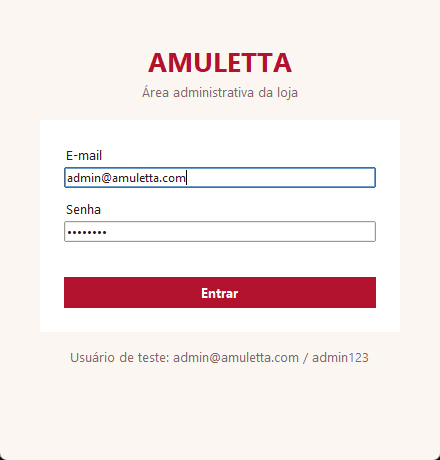
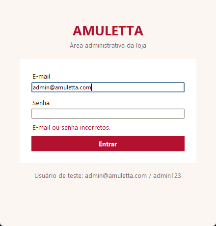
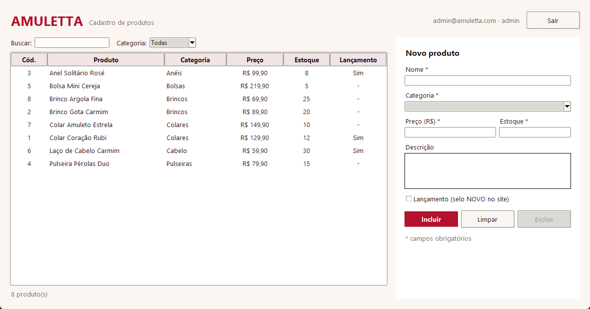
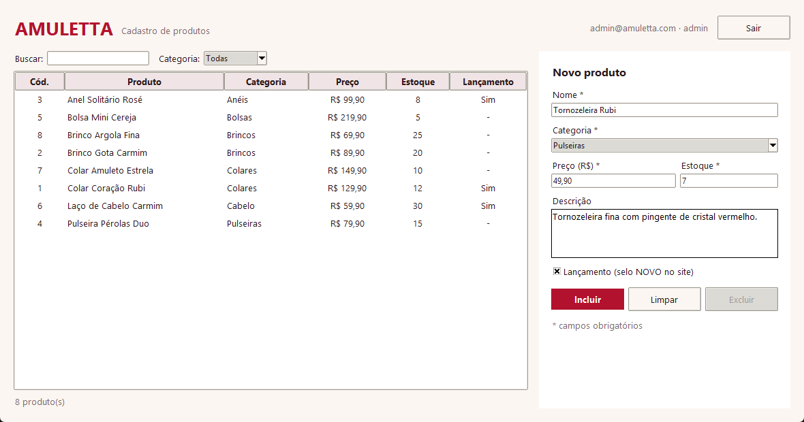
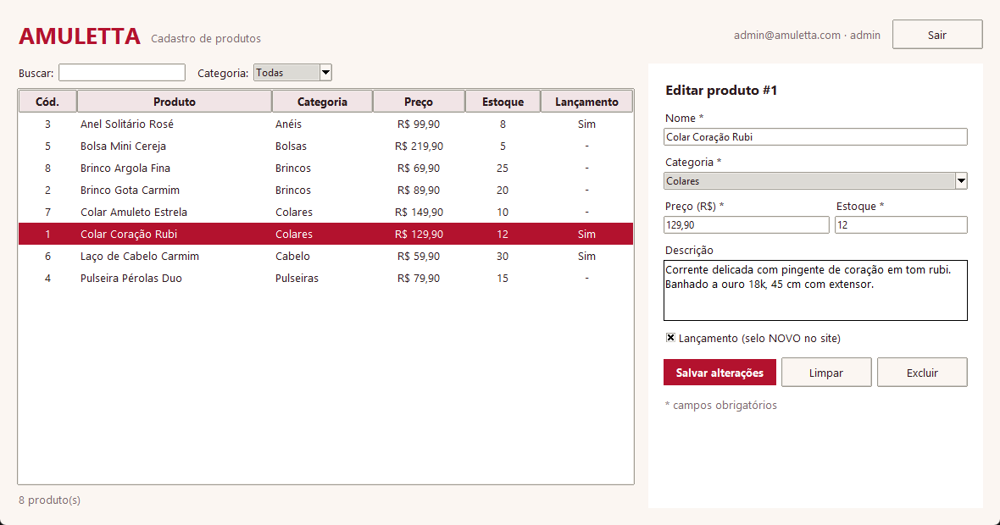
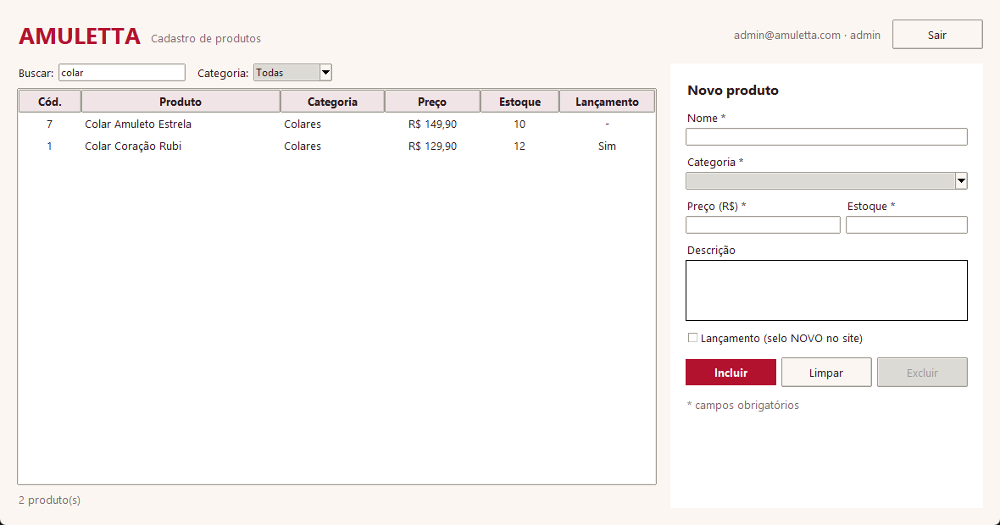

Projeto Integrador · Fase de Implementação: Bases do Sistema (Login e Cadastros Base / CRUD) · 05/11/2026
| Integrantes | Gabriela Ramos · ______________________ · ______________________ |
| Sistema | Sistema administrativo da loja virtual Amuletta (acessórios femininos) |
| Tecnologias | Python 3.12, SQLite 3 (módulo sqlite3), Tkinter (interface), unittest (testes) |
| Entregue nesta fase | Módulo de login e cadastro base de produtos com CRUD completo (incluir, consultar, alterar, excluir) |
| Código-fonte | github.com/gabizrm-prog/amuletta-sistema |
Nas fases anteriores prototipamos a loja virtual vista pela cliente (catálogo, sacola, checkout). O catálogo do protótipo era fixo no código; nesta fase criamos o lado da equipe da loja, que passa a manter esses produtos num banco de dados. Os produtos iniciais do banco são os mesmos oito do protótipo. Mudanças em relação ao protótipo:
#B3122E sobre fundo creme.





Banco: amuletta.db. Script de criação: schema.sql (executado por criar_banco.py ou automaticamente ao abrir o sistema). Chaves estrangeiras ativadas com PRAGMA foreign_keys = ON.
usuarios — quem pode entrar no sistema| Campo | Tipo | Restrições | Descrição |
|---|---|---|---|
| id | INTEGER | PK, autoincremento | Identificador do usuário |
| nome | TEXT | NOT NULL | Nome do usuário |
| TEXT | NOT NULL, UNIQUE, sem diferença de maiúsculas | Login do usuário | |
| senha_hash | TEXT | NOT NULL | Hash PBKDF2-SHA256 da senha (200.000 iterações) |
| salt | TEXT | NOT NULL | Valor aleatório (16 bytes, hex) usado no hash |
| perfil | TEXT | NOT NULL, 'admin' ou 'funcionario' | Nível de acesso |
| ativo | INTEGER | NOT NULL, 0 ou 1, padrão 1 | Usuário desativado não consegue entrar |
| criado_em | TEXT | padrão data/hora atual | Data de cadastro |
categorias — tipos de acessório| Campo | Tipo | Restrições | Descrição |
|---|---|---|---|
| id | INTEGER | PK, autoincremento | Identificador da categoria |
| nome | TEXT | NOT NULL, UNIQUE | Colares, Brincos, Anéis, Pulseiras, Bolsas, Cabelo |
produtos — cadastro base (CRUD)| Campo | Tipo | Restrições | Descrição |
|---|---|---|---|
| id | INTEGER | PK, autoincremento | Código do produto |
| nome | TEXT | NOT NULL (até 80 caracteres, validado no Python) | Nome exibido na loja |
| descricao | TEXT | NOT NULL, padrão '' | Material, tamanho, detalhes |
| categoria_id | INTEGER | NOT NULL, FK → categorias.id | Categoria do produto |
| preco | REAL | NOT NULL, > 0 | Preço de venda em R$ |
| estoque | INTEGER | NOT NULL, ≥ 0, padrão 0 | Quantidade disponível |
| lancamento | INTEGER | 0 ou 1, padrão 0 | Se exibe o selo NOVO na loja |
| criado_em | TEXT | padrão data/hora atual | Data de inclusão |
| atualizado_em | TEXT | padrão data/hora atual | Atualizado a cada alteração |
Relacionamento: categorias 1 — N produtos (cada produto pertence a uma categoria). Índices em produtos.categoria_id e produtos.nome para a consulta.
| Arquivo | Responsabilidade | Principais funções |
|---|---|---|
main.py | Ponto de entrada: prepara o banco e abre a interface. | main() |
criar_banco.py | Cria o arquivo amuletta.db; com --recriar apaga e recria. | main() |
schema.sql | Comandos CREATE TABLE e CREATE INDEX. | — |
app/banco.py | Conexão com o SQLite (commit em caso de sucesso, rollback em erro, sempre fecha), criação das tabelas e dados iniciais (6 categorias, 8 produtos, 2 usuários). | conectar(), criar_tabelas(), popular_dados_iniciais(), inicializar() |
app/auth.py | Módulo de login. Cadastra usuários com senha em hash e valida e-mail e senha. Mesma mensagem para e-mail inexistente e senha errada; bloqueia usuário inativo. | cadastrar_usuario(), autenticar(), gerar_hash() |
app/produtos.py | Cadastro base de produtos. Valida os dados (nome obrigatório, preço > 0, estoque ≥ 0, categoria existente) antes de gravar. Usa SQL parametrizado (?) contra SQL injection. | C incluir() · R consultar(), buscar_por_id() · U alterar() · D excluir() |
app/telas.py | Interface Tkinter: tela de login e tela de produtos (lista + formulário). Só chama as funções de auth e produtos, sem SQL na interface. | TelaLogin, TelaProdutos, Aplicacao |
tests/test_sistema.py | 11 testes automatizados de login e CRUD, cada um em banco temporário. | python -m unittest -v |
main.py → cria/abre o banco → Tela de login → auth.autenticar() confere o hash da senha → Tela de produtos → cada botão chama uma função de produtos.py, que valida e executa o SQL → a lista é recarregada do banco. “Sair” volta para o login.
Requer Python 3.10 ou superior, sem bibliotecas externas. Na pasta do projeto: python main.py. Usuários de teste: admin@amuletta.com / admin123 (admin) e loja@amuletta.com / loja123 (funcionário).
Resultado de python -m unittest -v: 11 testes, todos aprovados. Cobrem login válido, senha errada, usuário inexistente, usuário inativo, senha não gravada em texto puro, e-mail duplicado, CRUD completo, consulta com filtros, validações e exclusão de produto inexistente.
produtos.